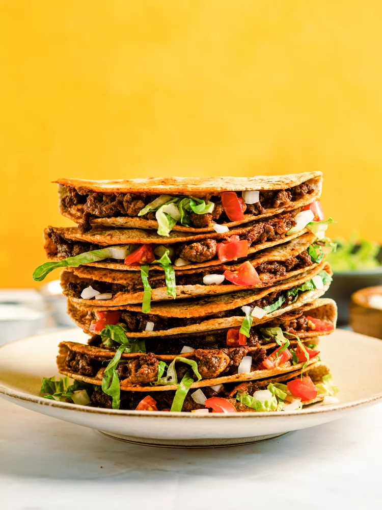

Ground beef tacos

Ingredients
- 1 pound 90% lean ground beef
- 1 (1-ounce) packet taco seasoning
- 2/3 cup water
- 1 1/2 cups shredded cheddar cheese
- 8 (6-inch) whole wheat flour tortillas, room temperature
- 1/2 cup finely diced white onion
- 1 cup diced tomatoes
- 2 cups shredded romaine lettuce
- Salsa (or pico de gallo), sour cream, and guacamole, for serving
Directions
- Preheat the oven to 400°F.
- Set a large skillet over medium-high heat and add the ground beef. Cook, breaking up the meat with a wooden spoon, until cooked through, 5 to 6 minutes
- Stir in the taco seasoning and water and bring to a boil.
- Reduce the heat to a simmer. Cook, stirring often, until thickened, about 4 to 5 minutes.
- Remove the skillet from heat and stir in the cheese.
- Cover half of each tortilla with the ground beef mixture and fold in half.
- Carefully remove the sheet pan from the oven and add the folded tacos.
- Bake until golden brown on the first side, about 5 minutes, then flip and bake again until golden on the other side, about 4 more minutes.
- Serve with onion, tomatoes, and lettuce for topping along with salsa, sour cream, and guacamole.